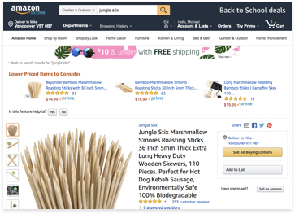

There’s nothing to display
The Chrome Extension can only display data for specific Amazon pages. Why not perform a search on one of the pages listed below.
1. Amazon Search Results
You can run the Chrome Extension against any Amazon search results page. Just enter a product or keyword into Amazon’s search bar and wait for the results to be displayed. Once there you are good to go!

2. Amazon Product Listings
For a more in depth look at a specific product you can run the Chrome Extension against an Amazon Product Listing page. This page can be accessed by selecting a product item from the Amazon search results page.
The Chrome Extension will also collect data from Amazon’s Wish Lists, Seller, Seller Storefront and Buying Guide pages